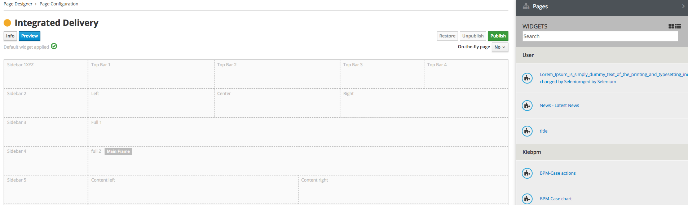
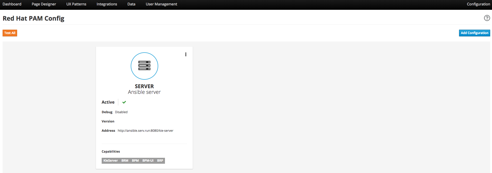

1. ENTANDO 5.0.0 RELEASE NOTES
1.1. ABSTRACT
This document contains release notes for Entando 5.0.
1.2. PREFACE
These release notes highlight new features in Entando 5.0, list features that are in technical preview, and include any known issues.
1.3. GOAL OF ENTANDO 5
The goal of Entando 5.0 is to fully engage our platform with the Modern Applications revolution by designing for a cloud-based infrastructure, adapting our architecture to be more distributed, and fully supporting DevOps methodologies.
1.4. ABOUT ENTANDO 5
Entando 5 represents a fundamental update to the Entando infrastructure to support modern application development processes including: new options for clustering, cloud native deployment, out of the box support for deploying apps in OpenShift, new UI technologies, and an updated widget development process.
These release notes provide a technical introduction to the changes included in Entando 5. Check out our Installation guide, Getting Started guide, or our blog for examples and more on putting Entando 5 to work.
1.5. WHAT’S NEW WITH ENTANDO 5
-
Infrastructure/Platform
-
Hybrid hosting environment
-
Entando 5 supports deployment in both public and private cloud configurations including deployment using Docker and OpenShift
-
-
Cloud native clustering using a JSR 107 compliant cache for scaling in the cloud
-
Entando 5 introduces the ability to back an installation of the MApp Engine-engine with a JSR 107 cache for multinode high availability (HA) configuration
-
A reference implementation using Infinispan is provided in the entando-components project
-
-
Container deployment
-
Deploy directly to OpenShift using images published to the Red Hat catalog
-
Deploy using Docker images provided on DockerHub
-
Install an Entando project using provided Source to Image (S2I) Docker images
-
-
New public facing REST APIs
-
Entando 5 exposes a new set of REST APIs for interacting with App Builder assets
-
-
Decoupled application builder and micro engine for updated deployment options
-
This release decouples the application builder’s front end from the Entando engine allowing the engine and App Builder to be deployed separately. The updated application builder is a ReactJS based application that uses REST APIs and can be deployed and managed separately from the MApp Engine
-
-
Upgrade to Spring 5
-
Security updates We have performed security scans as part of the Entando 5 software release to ensure that we are using secure libraries and practicing secure coding practices within our application. We continue to use automated tools and manual security reviews to monitor and evaluate the security of the Entando platform. Notable updates include:
-
Various library version upgrades to match OWASP security scan results at time of release
-
Software updates to support SonarQube security scans and improve software security
-
The Entando core has been updated to Spring 5.0.5
-
-
-
Processes
-
Supports DevOps processes
-
First class support for deploying Entando projects on Docker and OpenShift
-
New archetypes to deploy to OpenShift and Docker using Fabric8
-
Created Docker base images for quick extension and deployment
-
-
Manage full CI/CD life cycle
-
Created reference implementation of Entando Docker images in Jenkins to create, deploy, and manage an application built using Entando in a CI/CD environment
-
-
Decoupled CMS from MApp Engine
-
The CMS capability available in Entando 4.3.2 has been decoupled from the core MApp Engine implementation and will be available as a plugin to Entando 5 in a future release
-
-
New component development experience
-
The Entando Component Generator (formerly edo) has been updated to use a configuration file to more easily select different types of components to generate
-
-
1.5.1. KNOWN ISSUES
-
The ability to associate attributes with User Profiles is not implemented in the decoupled App Builder
-
Workaround: use the legacy application screens to add attributes to user profiles
-
Anticipated fix in first patch release
-
-
Manually editing and saving Data Types and Data Models in the decoupled App Builder has errors
-
Workaround: use the legacy application screens to edit Data Types
-
Anticipated fix in future patch release
-
-
If you move the homepage to a child of itself in the page tree it can result in browser and application stability problems
-
Anticipated fix in future patch release
-
The PAM Datatable and Task List widgets only function in the legacy App Builder
-
1.5.2. VERSIONING INFORMATION
| Artifact | Version |
|---|---|
entando-core |
5.0.0 |
entando-archetypes |
5.0.0 |
entando-ux-packages |
5.0.0 |
entando-vfs-manager |
5.0.0 |
app-builder |
5.0.0 |
MApp-Engine-admin |
5.0.0 |
1.5.3. SOFTWARE REQUIREMENTS
-
Java 1.8+
-
npm 5.6.0+ (for ReactJS front ends)
-
Maven 3.0.5+
-
Ant 1.8.0+
1.5.4. LEGAL NOTICE
-
LGPL v2.1 License for the Core
-
MIT License for the components
1.5.5. LINKS AND RESOURCES
-
Explore the code on GitHub: https://github.com/entando
-
See our Getting Started guide: http://docs.entando.com/#getting-started
-
See our Custom App Building guide: http://docs.entando.com/#_custom_app_building_with_entando
-
Contribute to the software: https://central.entando.com/en/community.page
2. PORTING FROM ENTANDO 5.0.0 TO 5.0.1
Upgrading to Entando 5.0.1 requires you to complete two sets of steps.
2.1. UPGRADE YOUR DATABASE
2.1.1. UPGRADE TO SPRING SECURITY AND REMOVE OLTU
-
Execute the following query:
# DB *Serv # -
Copy and past the following into your database client:
INSERT INTO api_oauth_consumers (consumerkey, consumersecret, name, description, callbackurl, scope, authorizedgranttypes, expirationdate, issueddate) VALUES ('appbuilder', '{bcrypt}$2a$10$axXuJXKHzgdmwQzBR3wvh.oSiiJp6On1pHxJgaBmwkRXnXqYqjhkK', 'Entando AppBuiler', 'Default Entando AppBuiler Consumer', NULL, 'read,write,trust', 'password,authorization_code,refresh_token,implicit', '2028-10-10 00:00:00', '2008-01-01 00:00:00');
2.1.2. UPGRADE THE DATABASE FOR BPM/PAM PLUGIN
If you are using the entando-plugin-jpkiebpm, you must add three columns to the jpkiebpm_kieformoverride table (in db *serv), to accomodate version changes.
-
In the Integrations > Components > Red Hat PAM Config, click Overrides List to open the Entando Error Page.
-
Delete the old rows in the table or fill in appropriate values for the following columns:
-
ALTER TABLE jpkiebpm_kieformoverride ADD COLUMN sourceid text;
-
ALTER TABLE jpkiebpm_kieformoverride ADD COLUMN widgetinfoid integer;
-
ALTER TABLE jpkiebpm_kieformoverride ADD COLUMN active boolean;
-
widgetinfoid must be an ID of the table jpkiebpm_widgetinfo
-
sourceid must be an ID of a configured BPM instance, defined inside the sysconfig table
-
-
2.2. UPGRADE PROJECT CONFIGURATION
2.2.1. UPGRADE TO STRUTS 2.5.17
-
Open the src/main/conf and src/main/conf/jboss directories. From each directory, open the web.xml file and remove the listener class:
org.entando.entando.apsadmin.system.resource.EntandoPluginLabelListener -
Open pom.xml and update the version of Struts2 in the Properties section from "2.5.10.1" to "2.5.17"
2.2.2. UPGRADE TO SPRING SECURITY AND REMOVE OLTU
-
Open the src/main/conf and src/main/conf/jboss directories. From each directory, open the web.xml file and remove the following:
-
definition of "cors" filter and its filter-mapping
-
definition of "AuthorizationServlet" and its servlet-mapping
-
definition of "AccessTokenServlet" and its servlet-mapping
-
3. INSTALLING ENTANDO APP BUILDER 5.0
3.1. PREREQUISITES
3.2. RUNNING THE MAPP ENGINE INSTANCE
3.2.1. CREATING A NEW ENTANDO PROJECT
Set up an Entando application via a Maven archetype. The archetype creates the project and structure needed to develop and add to an application.
Steps:
-
Open your command line and navigate to the directory that will house your new project.
-
Run the following command:
mvn archetype:generate -Dfilter=entando-archetype-webapp-generic -
Select Option 1, displayed as follows:
1: remote > org.entando.entando:entando-archetype-webapp-generic (Generic web app Archetype for Entando: an agile, modern and user-centric open source web app like platform.) -
If prompted for a version, select 5.0.0.
-
Enter values for groupId, artifactId, version, and package. These values go into the Maven setup in the new project. See the Maven documentation for more information on these values. https://maven.apache.org/guides/mini/guide-naming-conventions.html
-
Open the directory created by the Maven archetype in Step 2. The directory will have the same name as the value you entered for artifactId in Step 5. This directory contains all of the structure necessary to start the Entando MApp-Engine and execute the application. See Launching the Application section below for instructions on starting the newly created project.
3.2.2. LAUNCHING THE MAPP ENGINE
QUICK START USING DERBY AND JETTY
Once you have created an Entando application, you can launch it using Jetty and an embedded Derby database.
To do so, run the following command inside your project:
mvn clean jetty:run
Once started the logs will print the following messages:
[INFO] Started SelectChannelConnector@0.0.0.0:8080
[INFO] Started Jetty Server
[INFO] Starting scanner at interval of 5 seconds
The logs will indicate that your application is running. To launch your application, point your browser to your app name
3.3. LAUNCHING THE APP BUILDER
This section provides several options for launching the App Builder which is used to manage a separately running Mapp Engine instance. The App Builder is completely stateless and relies on the Engine to store the application configuration. If no Mapp engine is specified, the App Builder will default to providing mock data so that the functionality can be demonstrated.
Prerequisites:
-
git
-
npm
-
node
3.3.1. CLONE AND SETUP
Enter the following commands in your command line:
-
git clone https://github.com/entando/app-builder.git -
cd app-builder-
It is recommended to checkout the release branch corresponding to the version of the Mapp Engine, e.g.,
git checkout v5.0.0-release -
Available release branches can be listed with:
git branch -a
-
-
npm install -
npm start— Starts the application in dev mode (local web server).
|
Note
|
The npm install command installs npm dependencies inside the node_modules folder |
This will give you a running app-builder instance using mock data. The Configuration section below covers connecting your App Builder to a running MApp engine.
3.3.2. CONFIGURATION
There are two methods for using the App Builder, depending on whether the API calls will be to the live Entando Core or if they will use mock data.
-
USE_MOCKS (boolean): a Boolean setting that determines if the App Builder uses a live connection to the Entando Core or uses mock data. A value of "true" instructs the App Builder to use mock data. A value of "false" allows the App Builder’s APIs to make live data calls to the Entando Core.
-
DOMAIN (string): a string representing the domain name of the Entando Core instance. The protocol is optional and you can specify a subdirectory of the domain. Trailing slashes are invalid and it only validates up to third-level domains.
If you set USE_MOCKS to "false," you must run an Entando Core (MApp Engine) instance and then to connect the App Builder to the MApp Engine using the following steps:
-
Run the MApp Engine instance. See Running the MApp Engine section for more information.
-
Connect the MApp Engine.
If you set USE_MOCKS to "true," you do not need to run the App Builder instance because you are only using mock data.
To connect the MApp Engine
-
Create a file at the root of the app-builder called .env.development.local.
-
Add 'USE_MOCKS=false'
-
Add DOMAIN=<url of running MApp Engine>
-
Run
npm startin your App Builder.
3.3.3. ADDITIONAL COMMANDS
npm run lint-
Runs the linter to check code style. It fails if linting rules are not matched.
npm run coverage-
Runs unit tests. It fails if a unit test fails, or if the minimum coverage threshold is not met.
npm run import-plugins-
Compiles and imports Entando plugins.
npm run build-
Compiles the project and creates the a production build
npm run build-full-
Runs npm run lint, npm run coverage, npm run import-plugins and npm run build
3.4. SETTING UP A DATABASE (OPTIONAL)
You can configure a newly created Entando application to connect to a database as its backing store. Derby is the default configuration in archetype-created applications, but you can change the default to a different value. Open the Filter Properties file in src/main/filters and enter the appropriate environment and database configuration.
Create two databases in your dbms.
To connect the MApp Engine to a database server:
-
In your database server, create a user for the application.
-
Create two databases. Give the user from Step 1 permission to create, read, and write. For the quickstart, you should name the databases as follows:
<your-project-name>Port <your-project-name>Serv
|
Note
|
These are the default names included in the default properties files. You can adjust the names and then change the connection information in the project’s configuration filters in src/main/filters. |
-
You also need to uncomment the maven dependency for the database that your are using from the pom.xml file. For example for MySQL you would uncomment:
<dependency> <groupId>mysql</groupId> <artifactId>mysql-connector-java</artifactId> <version>5.1.18</version> </dependency> -
Update the appropriate Filter Properties file in src/main/filters to use the configuration for the database properties. For example, on a MacOS, you would update filter-development-unix.properties.
-
Set the user, database, and password for the values created in Steps 1 and 2.
-
Launch the application with
mvn jetty:run
|
Note
|
When launching with the |
3.5. CONFIGURING SWAGGER (OPTIONAL)
When generating an application, Entando automatically includes an instance of Swagger, a tool that lets you describe the structure of your APIs to make them easier for other machines to read. Configuring Swagger for use only takes a few steps.
-
In a browser, navigate to your application’s URL (e.g., http://localhost:8080/appname).
-
Append the URL with api/swagger-ui.html. Again, for example, http://localhost:8080/appname/api/swagger-ui.html
NoteFor security purposes, you should only run this in a development environment. Doing so in production would expose all the endpoints of your application. See the following section for details.
3.5.1. AUTHENTICATION DETAILS
Default login details:
Username: admin
Password: adminadmin
Default Swagger OAuth details:
Type: Request Body
clientId: swagger
Secret: = swaggerswagger
3.5.2. ENABLING SWAGGER IN A DEVELOPMENT ENVIRONMENT
To enable swagger in your development environment, you need to run your application with an enabled Swagger profile. There are two options. Run ONE of the following from the root of your generated project’s directory:
-
Start the container with a JVM parameter using the following command:
mvn clean jetty:run -Dspring.profiles.active=swagger -
Add an environment variable by using the following commands:
export spring_profiles_active=swagger
mvn clean jetty:run
3.5.3. HOW DOES THE INTEGRATION WORK?
The Swagger integration is based on three components and is activated by a Spring profile. The components are:
-
SwaggerConfig - responsible for configuring most of the Swagger UI behavior (or the library Springfox that provides Swagger UI functionality). It configures which paths to scan, where to find the oAuth endpoints, and other essentials
-
SwaggerMvcAdapter - makes the Swagger UI’s human-friendly HTML page and its resources available for the application
-
SwaggerInitializer - assists the Swagger UI with talking to your new application. Swagger UI needs to talk to the application backend, which require oAuth authentication to communicate back to the Swagger UI. The backend uses standard oAuth authentication, requiring an oAuth client_id and secret, and also that any requested redirect matches a specific URL. SwaggerInitializer is also responsible for adding the oAuth consumer details for Swagger in the database. If Swagger is enabled when the application starts, SwaggerInitializer will check for an existing configuration for a Swagger consumer in the database and adds one if necessary
If the swagger Spring profile is active, Spring will initialize and wire all three components during application startup. If inactive, Entando ignores the components.
3.6. BUILDING THE MAPP ENGINE FROM SOURCE CODE (OPTIONAL)
|
Warning
|
Building the MApp Engine from the source code is use case for heavily customizing your Entando project. As such, we recommend that all but the most advanced projects use the standard process outlined beginning with the Creating an Entando Project section above. |
To download the latest source code:
-
Open your terminal and create an empty directory for your project:
mkdir ~/my_new_project -
Move to the new directory:
cd ~/my_new_project -
Clone the following repositories IN ORDER: entando-core, entando-components, entando-archetypes, entando-ux-packages projects:
-
Entando-core:
git clone https://github.com/entando/entando-core -
Entando-components:
git clone https://github.com/entando/entando-components -
Entando-archetypes:
git clone https://github.com/entando/entando-archetypes
-
-
Install, IN ORDER, the entando-core, entando-components, entando-archetypes projects:
-
cd entando-core
mvn clean install -DskipTests -
cd entando-components
mvn clean install -DskipTests -
cd entando-archetypes
mvn clean install -DskipTests
-
-
Complete the download by following the steps from the Creating a New Entando Project section.
At this point you have installed all of the dependencies required to build a new MApp Engine instance.
|
Note
|
The command to use the artifacts you have installed locally with an additional switch on the archetype command to use local values only is: |
4. RUNNING ENTANDO WITH DOCKER
Full Stack Example Images
The project below includes scripts and example images that will boot up a full stack of Entando apps in Docker. https://github.com/entando/entando-ops/tree/master/Docker/Production/entando-full-stack
These projects are useful to quickly boot up an Entando environment in Docker. Can be forked/cloned for extension and updates as needed as well. Scripts and image names can be seen in the repository
Base Image
This base image provides a base Dockerfile that can be extended to create and manage an Entando application. The base image downloads all of the maven dependencies required for an application to run so the initial run can take some time however after that edits to a child Dockerfile will run fast. The base example in the Readme uses a jetty/derby combination for execution
https://github.com/entando/entando-ops/tree/master/Docker/Production/builder-images/docker-builder-5
Using S2I to Build Docker Images
To use the Docker S2I images, you must have already set up a database. See the Setting up a Database section for details.
By default, the app deployed in Docker will connect to a Postgres database to persist resources created using the App Builder and by the MApp Engine. In the app created from the archetype, update the properties in: <your application>/.s2i/environment to point to the user and databases created in the Setting up a Database section.
After configuring the database:
-
Pull in the Docker image using the following command:
docker pull entando/builder-s2i(Demo image using Jetty) -
Build the image using S2I using the command to build and deploy a Docker app in Docker:
s2i build <path or URL of your project> entando/builder-s2i <your image name>
Where:-
<path or URL of your project> is the path to your project or a URL to access the code. The build for this project will be invoked and the resulting war file deployed to the app server in the image
-
entando/builder-s2i is the name of the base S2I docker image provided by Entando
-
<your image name> is the name for this docker image
-
Run the Image
docker run -d -p 8080:8080 <your image name>
The app may take some time to start. It is downloading maven dependencies at startup. Your app will be available on http://localhost:8080/<your_project_name>; after startup is complete.
By default the image exposes port 8080 however you can change the local port mapped to that value by editing the first instance of 8080 in the docker run command above.
5. GETTING STARTED WITH ENTANDO APP BUILDER
5.1. SAMPLE MORTGAGE APPLICATION PROJECT
5.1.1. PREFACE
The Entando App Builder helps you create a variety of applications and integrate them with Red Hat BPM. It uses an intuitive UI, reusable templates, and drag-and-drop functionality that allows you to participate in every stage of the application design process regardless of your level of coding knowledge.
This demonstration walks through creating an applicant page for a mortgage application, and then integrates with Red Hat PAM.
Prerequisites:
-
Entando MApp Engine and App Builder installed
5.1.2. CONFIGURING THE APPLICANT PAGE
The Applicant page is a public-facing webpage.
CREATING A NEW PAGE MODEL
Page models are reusable templates. They determine the page layout via frames into which you can then drag and drop content and widgets.
-
Open the Entando App Builder.
-
From the tabs along the top, select UX Patterns > Page Models > Add.
-
Assign the page model a code and a name. Codes represent the page model’s unique identifier. The name can be more human readable. For example:
Code: entando_page_purple
Name: Purple - BPM -
In the JSON Configuration field, enter JSON content to structure the page. See the following text for an example.
{ "frames": [ { "pos": 0, "descr": "Top bar 1", "mainFrame": false, "defaultWidget": null, "sketch": { "x1": 0, "y1": 0, "x2": 2, "y2": 0 } }, { "pos": 1, "descr": "Top Bar 2", "mainFrame": false, "defaultWidget": null, "sketch": { "x1": 3, "y1": 0, "x2": 5, "y2": 0 } }, { "pos": 2, "descr": "Top Bar 3", "mainFrame": false, "defaultWidget": null, "sketch": { "x1": 6, "y1": 0, "x2": 8, "y2": 0 } }, { "pos": 3, "descr": "Top Bar 4", "mainFrame": false, "defaultWidget": null, "sketch": { "x1": 9, "y1": 0, "x2": 11, "y2": 0 } }, { "pos": 4, "descr": "Central Bar 1", "mainFrame": false, "defaultWidget": null, "sketch": { "x1": 0, "y1": 1, "x2": 11, "y2": 1 } }, { "pos": 5, "descr": "Central Bar mortgage 2", "mainFrame": false, "defaultWidget": null, "sketch": { "x1": 2, "y1": 2, "x2": 9, "y2": 2 } }, { "pos": 6, "descr": "Central Bar left", "mainFrame": false, "defaultWidget": null, "sketch": { "x1": 2, "y1": 3, "x2": 4, "y2": 3 } }, { "pos": 7, "descr": "Central Bar Center", "mainFrame": false, "defaultWidget": null, "sketch": { "x1": 5, "y1": 3, "x2": 7, "y2": 3 } }, { "pos": 8, "descr": "Central Bar right", "mainFrame": false, "defaultWidget": null, "sketch": { "x1": 8, "y1": 3, "x2": 9, "y2": 3 } }, { "pos": 9, "descr": "Banner Advisor", "mainFrame": false, "defaultWidget": null, "sketch": { "x1": 0, "y1": 4, "x2": 11, "y2": 4 } }, { "pos": 10, "descr": "Full", "mainFrame": false, "defaultWidget": null, "sketch": { "x1": 0, "y1": 5, "x2": 11, "y2": 5 } }, { "pos": 11, "descr": "Footer Left", "mainFrame": false, "defaultWidget": null, "sketch": { "x1": 0, "y1": 6, "x2": 5, "y2": 6 } }, { "pos": 12, "descr": "Footer right", "mainFrame": false, "defaultWidget": null, "sketch": { "x1": 6, "y1": 6, "x2": 11, "y2": 6 } }, { "pos": 13, "descr": "Footer 2 Left", "mainFrame": false, "defaultWidget": null, "sketch": { "x1": 0, "y1": 7, "x2": 5, "y2": 7 } }, { "pos": 14, "descr": "Footer 2 right", "mainFrame": false, "defaultWidget": null, "sketch": { "x1": 6, "y1": 7, "x2": 11, "y2": 7 } } ] } -
In the Template field, enter XML formatting to determine where each defined frame belongs and how to render it. See the example content below:
<#assign wp=JspTaglibs["/aps-core"]> <#assign c=JspTaglibs["http://java.sun.com/jsp/jstl/core"]> <!DOCTYPE html> <html lang="en"> <head> <meta charset="utf-8" /> <title> <@wp.currentPage param="title" /> - <@wp.i18n key="PORTAL_TITLE" /> </title> <meta name="viewport" content="width=device-width, initial-scale=1.0" /> <meta name="description" content="" /> <meta name="author" content="" /> <link rel="icon" href="<@wp.info key="systemParam" paramName="applicationBaseURL" /> favicon.png" type="image/png" /> <!-- Le HTML5 shim, for IE6-8 support of HTML5 elements --> <!--[if lt IE 9]> <script src="<@wp.resourceURL />static/js/entando-misc-html5-essentials/html5shiv.js"></script> <![endif]--> <@c.import url="/WEB-INF/aps/jsp/models/inc/content_inline_editing.jsp" /> <@c.import url="/WEB-INF/aps/jsp/models/inc/header-inclusions_light.jsp" /> <style> .editableform .control-group { margin-bottom: 0; white-space: nowrap; line-height: 28px; } </style> </head> <body class="purple" data-spy="scroll" data-target="#navbar-menu"> <!-- Navbar --> <div class="navbar navbar-custom navbar-fixed-top sticky" role="navigation" id="sticky-nav"> <div class="container"> <!-- Navbar-header --> <div class="navbar-header"> <!-- Responsive menu button --> <button type="button" class="navbar-toggle" data-toggle="collapse" data-target=".navbar-collapse"> <span class="sr-only">Toggle navigation</span> <span class="icon-bar"></span> <span class="icon-bar"></span> <span class="icon-bar"></span> </button> <!-- LOGO --> <a class="navbar-brand logo" href="#"> <img alt="acme-logo" class="logo-img" src="<@wp.imgURL />Logo_Acme_Bank.png"> </a> </div> <!-- end navbar-header --> <!-- menu --> <div class="navbar-collapse collapse" id="navbar-menu"> <!--Navbar left--> <ul class="nav navbar-nav nav-custom-left"> <!--frame 0 1--> <@wp.show frame=0 /> <@wp.show frame=1 /> </ul> <!-- Navbar right --> <ul class="nav navbar-nav navbar-right"> <!--frame 2 3--> <@wp.show frame=2 /> <@wp.show frame=3 /> </ul> </div> <!--/Menu --> </div> <!-- end container --> </div> <!-- End navbar-custom --> <!-- HOME --> <section> <!--frame 4--> <@wp.show frame=4 /> <!--frame 4--> </section> <!-- END HOME --> <!-- Features Alt --> <section class="section" id="mortgage"> <div class="container"> <div class="row"> <div class="col-sm-12"> <!--frame 5--> <@wp.show frame=5 /> <!--frame 5--> </div> </div> </div> </section> <section class="section"> <div class="container"> <div class="col-sm-4"> <!--frame 6--> <@wp.show frame=6 /> <!--frame 5--> </div> <div class="col-sm-4"> <!--frame 7 frame bpm --> <@wp.show frame=7 /> <!--frame 7--> </div> <div class="col-sm-4"> <!--frame 8 frame bpm --> <@wp.show frame=8 /> <!--frame 8--> </div> </div> </section> <section> <!--frame 9--> <@wp.show frame=9 /> <!--frame 9--> </section> <section class=""> <!--frame 10--> <@wp.show frame=10 /> <!--frame 10--> </section> <section class=""> <div class="container"> <div class="col-md-12"> <div class="text-center"> <!--frame 11--> <@wp.show frame=11 /> </div> <!--frame 11--> </div> </div> </section> <!-- FOOTER --> <footer class=" "> <div class="container text-center"> <div class="row"> <div class="col-md-12"> <!--frame 12--> <@wp.show frame=12 /> <!--frame 12--> </div> </div> <!-- end row --> <div class="row"> <div class="col-sm-6"> <!--frame 13--> <@wp.show frame=13 /> <!--frame 13--> </div> <div class="col-sm-6"> <!--frame 14--> <@wp.show frame=14 /> <!--frame 14--> </div> </div> </div> </footer> <!-- END FOOTER --> <script src="<@wp.resourceURL />static/js/jquery.ajaxchimp.js"></script> <script src="<@wp.resourceURL />static/js/jquery.sticky.js"></script> <script src="<@wp.resourceURL />static/js/jquery.app.js"></script> </body> </html> -
When finished, click Save.
CREATE THE APPLICANT PAGE
-
From the tabs along the top, select Page Designer > Page Tree > Add.
-
Enter a page title and a code. The Code field will auto-populate with a value similar to the Title and acts as the page’s unique identifier. For example:
-
Title: Application Home
-
Code: application_home
-
-
From the Select Page Placement drop-down menu, select the page to act as this page’s hierarchical parent.
-
In the Page Groups section, select an Owner Group and a Join Group.
-
Owner Group members have administrative access to this page
-
Join Group members are able to see the page
-
-
In the Settings section, select the page model you just created from the Page Model drop-down menu. Once selected, set the options for the remaining options in the Settings section.
-
Click Save and Configure. This opens the Page Configuration screen.
ADD WIDGETS
-
On the Page Configuration screen, locate the Widgets section on the right side of the screen.
 -
Search for the following widgets and drag them into the specified frame:
-
Choose a language purple/light and drag to Top Bar 4
-
Main banner purple and drag to Central Bar 1
-
Left 3 steps purple and drag to Central Bar Left
-
Right col help purple and drag to Central Bar Right
-
Banner advisor purple/light and drag to Banner Advisor
TipClick the Preview button to verify the appearance of the page before publishing.
-
-
When the widgets are in place and you are satisfied with the preview, click Publish.
|
Tip
|
Only click Publish after confirming that each widget has been configured properly. |
INTEGRATE THE BPM FORM
-
From the tabs along the top, choose Integrations > Red Hat PAM Config > Add Integration.
 -
In the Connection section, add all server information. For example:
-
General Settings section:
-
Active: On
-
(Optional) Debug: On
-
-
Connection section:
-
Name: My Application
-
Host name: <my.redhat.pamInstance.com>
-
Schema: http
-
Port: 8080
-
Webapp name: kie-server
-
Username: username for the process server administrator
-
Password: password for the process server administrator
-
Conn. Timeout (in millis): 500
-
-
-
Click Test Connection to verify a valid the configuration, then click Save.
-
Open the Page Tree by choosing the Page Designer tab > Page Tree.
-
Find your new page in the Page Tree and click its More Options button > Configure.
-
Search for the “BPM-form by Data Type” widget and drag it to the Central Bar Center frame.
-
Click the Preview button to verify the correct appearance.
-
Click Publish.
6. FIRST DEVELOPERS' GUIDE
6.2. CONFIGURING ANT
To configure Ant, open the file buildProperties.xml in the root of the project. The root of an Entando project is the directory where the pom.xml file resides.
By default, the buildProperties.xml file includes the properties for PostGresSQL and MySQL. To configure Ant, you must edit the values that pertain to your target DBMS. You can ignore any unused properties.
-
Database address, username, and password
-
Database executable path
<property name="postgres.hostname" value="localhost" /> <property name="postgres.port" value="5432" /> <property name="postgres.username" value="agile" /> <property name="postgres.password" value="agile" /> <property name="mysql.hostname" value="localhost" /> <property name="mysql.port" value="3306" /> <property name="mysql.username" value="agile" /> <property name="mysql.password" value="agile" />
Once configured, you need to declare the path of the target DBMS executables in either the PostgreSQL or MySQL section. The following properties are grouped by operating system, so be sure to configure properties under the correction OS and then comment out the remaining operating systems.
<!-- Properties definitions for *nix machines START --> <property name="tomcat.home.path" value="/opt/tomcat6" /> <property name="postgres.bin.path" location="/Library/PostgreSQL/9.5/bin/" /> <property name="postgres.bin.dump" value="pg_dump" /> <property name="postgres.bin.psql" value="psql" /> <property name="postgres.bin.restore" value="pg_restore" /> <property name="postgres.bin.drop" value="dropdb" /> <property name="postgres.bin.create" value="createdb" /> <property name="mysql.bin.path" location="/usr/bin" /> <property name="mysql.bin.dump" value="mysqldump" /> <property name="mysql.bin.restore" value="mysql" /> <property name="mysql.bin.create" value="mysql" /> <property name="mysql.bin.drop" value="mysql" /> <property name="ant-contrib.jar.path" location="/usr/bin/java/ant-contrib.jar" /> <!-- Properties definitions for *nix machines END -->
The only properties to adjust are those regarding the path of the executables, e.g., postgres.bin.path or mysql.bin.path.
6.2.1. ADDITIONAL SETTINGS FOR WINDOWS
If you are a Windows user, you must also modify the file buildTasks.xml, otherwise Maven will not start correctly and will throw a “file not found” error.
6.2.2. WINDOWS 10
Find and edit all seven instances of executable=”mvn” in the buildTasks.xml file. Entando 5 contains seven total instances.
Change from:
executable="mvn"
to:
executable="mvn.cmd"
6.2.3. OTHER WINDOWS VERSIONS
Find and edit all seven instances of executable=”mvn” in the buildTasks.xml file. Entando 5 contains seven total instances.
Change from:
executable="mvn"
to:
executable="mvn.bat"
6.2.4. ANT TASKS
After you have correctly declared the executable paths in buildProperties.xml, you can begin executing Ant tasks to perform management operations.
These tasks include the creation of the WAR file and database management.
To retrieve the list of available tasks, run the following command from the terminal window or command prompt:
ant -p
The result shows all running tasks, similar to the following:

|
Important
|
Remember that the tasks aimed at database management will only impact the relevant project’s database. For example, in a project named entandodemo, the task PG-db-drop will only drop the entandodemoPort and entandodemoServ databases. Similarly, creating a dump will involve the same databases. |
Tasks for PostgreSQL:
|
Tip
|
Before using the PostgreSQL related tasks, you need to create the following directory in your project ./src/main/db/backup/tar. This directory is only necessary for using a PostGresSQL database. |
-
PG-db-create: creates the databases for the current project
This item won’t appear in the list -
PG-db-drop: drops the default databases of the project
This item won’t appear in the list -
PG-db-backup-tar: dumps and compresses the databases, placing the file in ./src/main/db/backup/tar
Remember that you must create the 'tar' directory beforehand -
PG-db-full-update-tar: restores the dump created with the previous command
The process drops databases before the restore takes place
Tasks for MySQL:
-
MySQL-db-backup: dumps the project databases
NOTE: the dump will be placed in the src/db/mysql -
MySQL-db-create: creates the project databases
-
MySQL-db-drop: drops default project databases
-
MySQL-db-full-update: runs a database update
NOTE: the dump must be present in src/db/mysql -
MySQL-db-restore: drops existing tables, then restores the dump
NOTE: the dump must be present in src/db/mysql
General tasks:
-
WAR-build: creates the WAR of the project for Apache Tomcat
-
WAR-build-jboss: creates the WAR of the project for JBoss / Wildfly
6.3. TROUBLESHOOTING
Most setup errors result from an improper configuration in either buildProperties.xml or, for Windows users, buildTasks.xml.
-
The path of DBMS binaries postgres.bin.path or mysql.bin.path
-
Username and password for accessing the database. By default, both the username and password are “agile”
-
The URL of the database. The default is ”localhost”
6.4. FILTER MANAGEMENT
Filters contain key:value pairs that Entando uses in templates to generate essential files such as context.xml and web.xml. Each filter generates slightly different xml depending on the target environment, developer, or production environment.
The contents of the filters are very similar with the main difference being the name. Different commands select different filters for use. Development filters are identical; production filters differ by one property. Filter contents are essentially identical in all the other respects.
Entando comes with the Jetty plugin and Derby as servlet container and database, respectively. As such, you do not need to edit any filter to run a newly created Entando project. Filters are only modified by developers when developing a project, such as one using a database other than Derby.
6.4.1. DEVELOPMENT FILTERS
Development filters operate during the development phase of the project; each operating system has its own version of the filter.
-
Unix: filter-development-unix.properties
-
Windows: filter-development-windows.properties
The command mvn clean jetty:run selects the appropriate filter to generate the context or web XML files.
6.4.2. PRODUCTION FILTERS
DevOps teams usually prepare the production filters and contain the values intended for the target production (staging) environment.
Production filters co-exist with development filters with no overlap between them.
-
Tomcat: filter-production.properties
-
JBoss or Wildfly: filter-production-jboss.properties
The command ant WAR-build, for Tomcat application servers, uses the filter-production.properties filter. Templates that generate the context.xml and web.xml files are in the directory ./src/main/config.
The command ant WAR-build-jboss uses the filter-production-jboss.properties filter. The template that generates the web.xml is in the directory ./src/main/config/jboss.
6.4.3. FILTER SETUP
Filters are highly customizable. The following paragraphs list adjustments to the basic properties for getting started. Each of the values in this section are from the filter-development-{operating system}.properties file.
6.4.4. NETWORK SETUP
Make changes to your network. The properties below come with predefined values for development and production filters. Change them as-needed to fit your target environment.
profile.application.baseurl.hostname profile.application.baseurl.port profile.application.baseurl.port.separator
6.4.5. SERVLET CONTAINER SETUP - TOMCAT
This is valid for the filter-development-unix, filter-development-windows and filter-production.
Edit the profile.tomcat.home property to reflect the path of Tomcat’s installation directory.
6.4.6. APPLICATION SERVER SETUP - JBOSS/WILDFLY
Edit the profile.jboss.home property to reflect the path JBoss or Wildfly installation directory.
6.4.7. DATABASE SETUP
Each filter comes with sets of declarations for common databases. By default, all sets are commented out except for Derby.
To enable Entando to connect a different database, you must uncomment the appropriate database set and then comment out the Derby set. In addition, edit the following properties to fit your destination environment:
profile.database.hostname=localhost profile.database.port=1527 profile.database.username=agile profile.database.password=agile
Entando supports most common RDBMSes out-of-the-box. If your target database does not appear in the list (e.g., Oracle), your developers must create the properties in the filters.
6.5. IMAGEMAGICK SETUP
When you upload an image to Entando through the CMS plugin, it is automatically cropped into different formats to produce thumbnails ready to be used when presenting contents.
Entando uses a third party application called ImageMagick which is available for both Linux and Windows.
To crop the images properly, Entando requires that the ImageMagick library be present in the system. You can override this setting using steps for the relevant OS below.
|
Note
|
Generally, only Windows systems require setup. You only need to set up a Linux system if you need to switch off thumbnail generation. |
6.5.1. LINUX/MAC SETUP
Open the file systemParams.properties in the directory ./src/main/config of the Entando project.
6.5.2. WINDOWS SETUP
Configure the following properties to reflect the installation directory of ImageMagick on Windows:
imagemagick.windows=true imagemagick.path=C:\\Program Files\\ImageMagick-6.6.3-Q16
|
Note
|
The CMS plugin will throw a 500 error if you upload an image with an improperly configured ImageMagick setup. |
7. CUSTOM APP BUILDING WITH ENTANDO
7.1. INTRODUCING THE ENTANDO APP BUILDER
The App Builder is Entando’s application to help you integrate, configure and customize any kind of modern web application, regardless of your programming proficiency. The App Builder provides an Admin Console, a visual environment, that collects elements for configuring your web application and managing your activities.
The App Builder is a ReactJS-based application that uses REST APIs to communicate with the Entando Core.
This document describes the elements and functionalities of the Admin Console.
7.1.1. ENTANDO ADMIN CONSOLE VERSION 5.0
With Entando version 5.0 the Admin Console has been redesigned and renewed with the adoption of the PatternFly framework and guidelines. PatternFly is built on top of Bootstrap3 and provides an enterprise grade UX look and feel based on research and UX best practices.
7.2. APP BUILDER OVERVIEW
The Entando main view is the entry point for every administration activity. On the up side of the screen there is an horizontal menu, which gives access to all Entando’s functionalities, while on the down-side of the screen, the Dashboard provides an overview of Entando status and a quick access to some functionalities.
7.3. DASHBOARD
The dashboard is divided into distinct areas.

-
Page Status (gives an overview of the status of the pages: Online, Online /= Draft and Draft)
-
List of Pages (gives an overview of the list of all Pages: Name, configured Page Model, Number of configured Widgets, Status, Last Modified)
-
Add Page (possibility to add a new Page)
-
User Management (quick access to Users list and Group list)
-
Add User (possibility to add a new User)
-
UX Patterns (gives an overview of the number of configured Widgets and Page Models)
-
Add Widget (possibility to add a new Widget)
-
Integrations (gives an overview of the number of integrated components and APIs)
7.4. CREATING AND MANAGING PAGES WITH PAGE DESIGNER
The Page Designer section deals with all page management-related activities.
-
Page Tree
-
Page Configuration
-
Page Settings
7.4.1. USING THE PAGE TREE
The Page Tree subsection shows the hierarchical structure of the pages and their statuses, and lets you perform all page management actions.
CREATING A NEW PAGE
-
From the tabs along the time, choose the Page Designer > Page Tree > Add.
-
Enter a name in both the English and Italian fields.
-
(Optional) Enter a code. By default, Entando generates a code similar to the page title, but you can manually enter a different code. The field accepts alphanumeric characters and underscores, with a character limit of 30.
NoteOnce you save the page, you will no longer be able to edit the page’s Code field.
-
Select an Owner Group and a Join Group from the drop-down menus in the Page groups section. Owner Group members can administer the page. Join Group members can view the page.
-
Select from the Page Tree section the page or folder that will be the parent of the new page.
-
Select a Page Model from the Page Model drop-down menu. The Page Model determines the layout of your new page. See the Using Page Models section below.
-
Set additional options from the Settings section as needed.
-
Displayed in menu: toggles the page’s presence in the menu on or off.
-
SEO: sets toggles on or off optimization of the page for Search Engine Optimization (SEO)
-
Charset: specifies the character encoding to use. Selectable between utf8 and iso-88591
-
Mime Type: identifies the type of content on the page
-
-
After you have made your selections, click Save and Configure to open the Configuration section. Learn more in the Configuring a Page section below.
-
Open the Page Tree and find the page to edit.
-
Click the Actions (three vertical dots) button in line with the page and select "Edit."
7.4.2. CONFIGURING A PAGE
The Page Configuration section is where you assign widgets to the frames defined by the Page Model you applied to your page. The available widgets are in the right pane. Apply widgets by dragging and dropping them to a frame of your choice.
This is also where you publish or unpublish the page or preview the layout prior to publishing.
Click the Info button for a summary of options you assigned when creating the page, e.g., Title and Owner Group.
7.5. UX PATTERNS: MANAGING WIDGETS, PAGE MODELS, AND FRAGMENTS
The UX Patterns section provides settings options for your general UX Patterns.
7.5.1. USING WIDGETS
A Widget is an independent software component configured and executed within your application’s page. Widgets provide UX/UI blocks that deliver a specific function.

-
User Widgets: user-generated widgets created via the Admin Console
-
Custom Widgets: widgets designed to meet specific applications needs such as Red Hat PAM widgets
-
Stock Widgets: default widgets provided by the App Builder to perform common tasks
-
Specific Application Widgets: widgets that apply only to a specific tool in Entando, e.g., the installation of CMS module provides Content Management related widgets
-
Plugins Widgets: widgets provided by the installed plugins
|
Note
|
Each widget’s Action menu differs depending on the type, including no available actions at all. |
7.5.2. USING FRAGMENTS
Fragments are single portions of front-end interface used in widgets (including plugins) and Page Models. They are are HTML blocks that include Freemarker instructions by using specific tags that you replace with appropriate values each time you use the fragment. Entando then renders the widgets using the fragments. The FRAGMENTS section lets you manage existing fragments or add new ones.
ADDING A NEW FRAGMENT
-
From the tabs along the top, choose the UX Patters tab > Fragments > New.
-
Enter a Code value. This value represents the fragment’s unique identifier and appears in the Name column of the Fragments table.
NoteOnce you save the fragment, you will no longer be able to edit its Code field.
7.5.3. USING PAGE MODELS
The Page Model is the look and feel of an application’s page. It defines the structure of the page using frames or areas of the page that contain widgets.
-
JSON Configuration: formatted text that defines the frame structure of the page.
-
Template: the look and feel and the real layout of the page. In other words, the template defines where to show a frame and how it will be rendered. Templates use Velocity Template Language (VTL) to provide an simple and clean way to incorporate dynamic content into a web page. It supports statements and directives, references and comments, access to exposed java objects, and methods.
CREATING A PAGE MODEL
-
From the tabs along the top, select UX Patterns > Page Models > Add.
-
Assign the page model a code and a name. Codes represent the page model’s unique identifier. The name can be more human readable. For example:
Code: entando_page_purple
Name: Purple - BPM -
In the JSON Configuration field, enter JSON content to structure the page. For example:
{ "frames": [ { "pos": 0, "descr": "Top bar 1", "mainFrame": false, "defaultWidget": null, "sketch": { "x1": 0, "y1": 0, "x2": 2, "y2": 0 } }NoteThe JSON content must be a single object defining "frames." In other words, the content you enter must go within the
frames: []object.See the Getting Started with Entando App Builder document for a complete example.
-
In the Template field, enter XML formatting to determine where each defined frame belongs and how to render it. See for a complete example.
-
When finished, click Save.
7.6. INTEGRATING WITH RED HAT PROCESS AUTOMATION MANAGER (PAM)
Entando integrates with Red Hat’s Process Automation Manager (formerly Red Hat JBoss BPM Suite), a middleware platform for creating cloud-native business automation applications and microservices. It enables enterprise business and IT users to document, simulate, manage, automate and monitor business processes and policies. It is designed to empower business and IT users to collaborate more effectively, so business applications can be changed more easily and quickly.
-
From the tabs along the top, choose Integrations > Red Hat BPM Config > Add Integration.
-
In the Connection section, add all server information. For example:
-
General Settings section:
-
Active: On
-
(Optional) Debug: On
-
-
Connection section:
-
Name: Ansible Server
-
Host name: ansible.serv.run
-
Schema: http
-
Port: 8080
-
Webapp name: kie-server
-
Username: username for the process server administrator
-
Password: password for the process server administrator
-
Conn. Timeout (in millis): 500
-
-
-
Click Test Connection to verify a valid the configuration, then click Save.
-
Open the Page Tree by choosing the Page Designer tab > Page Tree.
-
Find your new page in the Page Tree and click its More Options button > Configure.
-
In the right pane, search for the “BPM-form by Data Type” widget and drag it to a frame established by your page model.
-
Click the Preview button to verify the correct appearance.
-
Click Publish once your page is complete.
7.7. MANAGING USERS
The Entando App Builder assigns access rights using combinations of roles and groups. You can manage all activities and privileges for roles and groups through the User Management tab.
-
Users: perform operations and access information. Users are characterized by a Profile Type that identifies the individual, such as name and email address. The actions that a user can take in an Entando program derive from combinations of Roles and Groups.
-
Roles: assigned sets of permissions, e.g., content editing rights, or user profile editing rights. Roles are mutually independent, meaning one user can be associated with multiple roles.
-
Groups: assigned sets of users, with each user given a role within the group. One user can belong to multiple groups. For example, Lynne is a member of the Content Editing group and has the role of Administrator, giving her the ability to perform any task on pages that the Content Editing group is assigned to. She’s also a member of the Newsletter group with the role of Editor, meaning she can edit content, but does not have full access to the pages the Newsletter group is assigned to.
-
User Restrictions: perform access restrictions on the users, e.g., months availability since the last access, or months validity of the user password, etc.
-
Profiles Types: perform different user’s profile types and creation of the new profile types.
|
Tip
|
For first time projects, consider creating profiles from largest to smallest. For example:
|
7.7.1. WORKING WITH USERS
CREATING A ROLE
-
From the tabs along the top, select User Management > Roles > Add.
-
Enter a name.
-
(Optional) Enter a code. The code is the Role’s unique identifier. By default, Entando generates a code similar to the page title, but you can manually enter a different code. The field accepts alphanumeric characters and underscores, with a character limit of 30.
NoteOnce you save the role, you will no longer be able to edit the page’s Code field.
-
In the Permissions section, toggle to "On" the access rights all users assigned to this role will possess. For example, public users may have no options toggled while power users may have the "All Permissions" option toggled to On.
-
Click Save. To edit a Role after saving, return to the Roles screen. In the Roles table, select the Actions menu (three vertical dots) for the role to change and select "Edit."

CREATING A GROUP
-
From the tabs along the top, select User Management > Groups > Add.
-
Enter a name.
-
(Optional) Enter a code. The code is the Group’s unique identifier. By default, Entando generates a code similar to the page title, but you can manually enter a different code. The field accepts alphanumeric characters and underscores, with a character limit of 30.
NoteOnce you save the group, you will no longer be able to edit the group’s Code field.
To edit a Group after saving, return to the Groups screen. In the Groups table, select the Actions menu (three vertical dots) for the group to change and select "Edit."

CREATING A USER
-
From the tabs along the top, choose User Management > Users > Add.
-
In the Username field, enter
NoteThe username must be between 8-20 characters. You can use numbers, underscores, special characters, and upper or lowercase letters.
-
Enter a password.
-
From the Profile Type drop-down menu, select “Default User Profile.”
-
Toggle the Status to “On” to ensure that individuals can sign in with this user’s credentials.
-
Click Save to create the user and return to the Users screen.
SETTING A USER’S AUTHORIZATIONS
-
From the table on the Users screen, find your new user profile and click More Options > Manage authorizations for: your profile name. Set the following options:
-
User Group: select a group to assign this user to. You can assign a user to as many groups as you want.
-
User Role: select the role this user should have in the group. You can only assign a user to one role per user group.
The User Group/Role pairing will appear in the Authorizations table at the top of the screen.
-
-
Click Add and then click Save.
7.7.2. RESTRICTING ACCESS
Entando lets you set restrictions on users (see Figure below), specifically a shelf life for passwords and a maximum time between log ins before the password expires.
-
From the tabs along the top, choose User Management > User Restrictions.
-
Toggle the Password Always Active option.
-
On - the password never expires and users have unlimited time between logins
-
Off - activates the password limitation fields, allowing you to set expirations
-
-
Toggle the Enable Gravatar integration (Avatar of users) option.
-
On - enables management of the user’s avatar
-
Off - disables Gravatar integration
-

7.8. PRESENTING DATA
Data Types are collections of attributes. They are used to gather and manage data coming from external sources, like APIs or the IoT. This abstraction layer allows Entando to perform core features like searching on external data.
Data Models are used to agnostically render data coming from data types, ensuring that the same data can be represented differently, such as with forms, tables, or graphs. By separating the definition and presentation of data, the Entando App Builder gives you the ability to display the same data in a context- and user-aware way without requiring a data source or integration.
-
Create a Data Type.
-
Create one or more Data Models per Data Type.
-
Publish the data on web pages with one or more widgets. The Data section allows you to manage the Data.
7.8.1. STRUCTURING WITH DATA TYPES
The Data Types section lists all available Data Types, their attributes, and is where you can create a new data structure.
-
From the tabs along the top, choose Data > Data Type > New.
-
Enter a Code. The code must be three letters.
-
Enter a Name.
-
Click Save. This opens the Attributes section where you specify OGNL validation.
7.9. CONFIGURING ENTANDO
The Configuration section (far right of the toolbar, gives you access to Entando general duty functionalities, such as configuring Categories, Labels, Configuration Reload, Database backup, file browsing and groups management.
7.9.1. CATEGORIES
Categories are dividers and parent folders for pages in your Entando page tree. Add a new category by clicking the Add button.
7.9.2. LABELS AND LANGUAGES
The Languages tab displays a list of all configured languages in the system. You can add as many different languages to the system as you need by selecting a language from the Select Language drop down menu and clicking Add. You can then include the appropriate vocabulary for any term in the System Labels section.
The System Labels tab displays system labels that apply to the entire Entando application. By default, system labels are available in English and Italian. If you add additional languages in the Languages tab, you can enter the appropriate word for a label in your choice language.
7.9.3. DATABASE
The Database section lets you back up your entire Entando’s database by clicking the Create Backup button. The backed up files become available from the Protected folder of the File Browser section once the backup process completes.
7.9.4. FILE BROWSER
The File Browser section lets you browse files, upload, create text files and folders, and access database backups from two distinct areas of the file-system:
-
Public: /project_name/src/main/webapp/resources
-
Protected: /project_name/src/main/webapp/protected
|
Note
|
Backed up database files are in the Protected section by default. |
8. WORKING WITH ENTANDO WIDGETS
Widgets are how Entando interacts with users through the front end of a web application. CMS contents, input forms, and sign-in fields are examples of widgets. In short, everything in the front end of the webapp happens through widgets.
Widgets have several defining characteristics:
-
They do not contain business logic. The only logic present in a widget is relative to the presentation. The data a widget always comes from lower layers, either through a REST API or using a standard, custom tag.
-
They do not communicate. This is an Entando decision against using Portlets to make widgets leaner, more exportable, and easily modifiable. However, technologies are available on both the client and server sides to pass data between widgets, depending on the scenario.
-
They are technology agnostic, which is another Entando choice. We believe that developers must be free to create widgets using the technology they already know or are most proficient with.
8.1. WIDGET CATALOG
Every widget has a single entry in the widgetcatalog table of the *Port database. Beginning with Entando 5, the widget table has the following schema:
Column name |
SQL Type |
Use |
code |
character varying(40) NOT NULL |
* Primary key * unique ID (code) of the widget * for simpler widgets, this is the name of the widget’s JSP file |
titles |
text NOT NULL |
XML containing the human readable name of the widget for each language of the admin console |
parameters |
text |
* For widgets requiring configuration |
plugincode |
character varying(30) |
* For widgets bundled with a plugin * unique code of the plugin belonging to this widget |
parenttypecode |
character varying(40) |
* For widgets that are a specialization of an existing widget * the id of the original widget used as a base for the current entry |
defaultconfig |
text |
For widgets that are a modification of an existing widget * XML containing the permanent configuration of the current entry |
locked |
smallint |
Express the ability to delete the widget. A value of 1 means the widget cannot be deleted, even by an administrator. A value of 0 means you can delete the widget. * Possible values [0,1] |
maingroup |
text |
Group ID of the widget’s owner |
8.2. WIDGET CATALOG EXAMPLES
The table below presents example values for each column, and their related meanings. The example values are unrelated to each other unless otherwise noted.
| Column name | value / notes |
|---|---|
code |
content_viewer * a FreeMarker script associated with this widget in the guiframent.widgettypecode table * if the FreeMarker script is not found, then it looks for webapp/WEB-INF/plugins/aps/jsp/content_viewer.jsp |
titles |
<?xml version="1.0" encoding="UTF-8"?> Note: this XML contains the human readable names of the widgets available in the languages of the admin console |
parameters |
<?xml version="1.0" encoding="UTF-8"?> Note: when configuring a widget on a page, the system will ask for the values of contentId and modelId; it will use the action viewerConfig to manage the configuration logic |
plugincode |
jacms Note: this is the code (unique ID) of the plugin this widget belongs to. This information determines the path of the underlying widget JSP (if any) |
parenttypecode |
entando-widget-navigation_bar Note: this example shows that the current entry is a specialization of the entando-widget-navigation_bar widget. This widget’s configuration file is found in the following (defaultconfig) column Widgets based on the Struts2 framework use the value formAction |
defaultconfig |
<?xml version="1.0" encoding="UTF-8"?> Note: this widget uses the setup above and is not configurable Widgets based on the Struts2 framework have here the declaration of the action called when the widget is rendered in a page |
locked |
1 A value of 1 indicates that the widget is locked and cannot be deleted. A value of 0 allows administrators to delete the widget. |
maingroup |
free Note: this widget is freely accessible but must be placed on an accessible page to be used |
8.3. BASIC WIDGETS
Basic widgets in Entando are composed of two objects: a JSP file and a record in the widgetcatalog table.
In basic widgets, JSTL custom tags interact directly with the Entando core to generate dynamic data. Widgets that publish content (e.g., the “Publish a Content” widget (code: content_viewer)) or publish lists of content (e.g., “Publish a List of Contents” widget (code: content_viewer_list)) as well as the language selector and the login widget fall under this category.
8.3.1. EXAMPLE
To create a basic widget:
-
Create the following file in your project:
src/main/webapp/WEB-INF/aps/jsp/widgets/hello_world.jsp -
Copy the following HTML into the file you just created:
<h3>Hello world</h3> -
Execute the following query in the *Port database:
INSERT INTO widgetcatalog (code, titles, parameters, plugincode, parenttypecode, defaultconfig, locked, maingroup) VALUES ('hello_world', '<?xml version="1.0" encoding="UTF-8"?> <properties> <property key="en">Hello World Widget</property> <property key="it">Widget Ciao Mondo</property> </properties>', NULL, NULL , NULL, NULL, 1, 'free'); -
Restart the Entando application. After restarting, the “Hello World" widget appears in the list of the available system widgets.
8.4. CONFIGURING WIDGETS
Configurable basic widgets contain XML with a list of the parameters that needs to be configured and the action that handles the process of configuration. The action for the configuration varies by widget, but each has an abstraction layer that makes developing such actions easier.
The widgetcatalog.parameters column in the *Port database lists all basic widgets with configurable fields and what those fields are.
You can also retrieve configured parameters using the tag:
<wp:currentWidget param=”config” configParan=”NAME_OF_THE_PARAMETER” />
8.5. STRUTS2-BASED WIDGETS
Entando leverages the Struts2 framework to implement actions within certain widgets. These actions transfer data and help determine which result to render in the view. For more information about Struts2 widgets, see the Entando Developer Primer.
Struts2-based widgets require additional set up, so Entando recommends having the Entando Component Generator (formerly known as EDO) generate all the files. You can access the Component Generator here: https://github.com/entando/component-generator/tree/v5.0.0-release
When working with Struts2-based widgets, Entando applications follow two steps:
-
The system detects that a Struts2-based widget needs to be rendered so it executes the action specified in the record of the widget in the widgetcatalog table.
-
The application executes the action and renders a JSP as a result.
One important difference between Basic and Struts2-based widgets is that Struts2 widgets are generally composed of multiple JSP files.
The exact details of how to build an action for a widget are in the Entando Developer Primer, but the key points are:
-
Action paths are declared in the file:
./src/main/resources/entando-struts-plugin -
The java class(es) implementing the action, the XML declaring the action itself, and the optional XML used for validation are found in the following path:
./src/main/java/<reverse_domain_package>/aps/internalservlet/ -
The XML declaring the actions references the JSP files in:
src/main/webapp/WEB-INF/aps/jsp/internalservlet/ -
The Spring bean underlying the action Java class is declared in:
src/main/resources/spring/apsadmin
Struts2 makes available all properties and public methods declared in the Java class that implements the action. Mixing JSTL and Struts2 tags is also possible. Entando uses OGNL expression language to get and set properties of Java objects.
8.5.1. EXAMPLE OF DATABASE DEFINITION
Struts2-based widgets use the following configuration:
column |
value |
parenttypecode |
formAction |
defaultconfig |
<?xml version="1.0" encoding="UTF-8"?> Note: the action path always starts with /ExtStr2/, but /ExtStr2/ is not used in the action declaration |
8.5.2. WIDGET CONFIGURATION
Configuration for a Struts2-based widget configuration is different from that of basic widgets. In this case the XML containing the configuration parameters does not work as expected.
You can overcome this by doing the following:
-
Creating a basic widget with a standard configuration
-
Using a Struts2 tag to trigger a standard action, e.g.,
<wp:internalServlet actionPath=”/ExtStr2/do/ACTION_NAMESPACE/MY_ACTION” />
Using this method, the JSP created for the basic widget is a trigger for the next action that renders the proper JSP.
In this scenario, you can retrieve the configuration parameters inside the action class.
9. LIST OF ENTANDO WIDGETS
9.1. CREATING A LOGIN PAGE
-
From the App Builder, go to UX Patterns > Widgets.
-
Scroll down to the Stock section and select the Login Form widget.
-
Customize the redirect logic for the form in the Custom UI template to redirect to your desired landing page by page code. See the bold text in the example code below.
NoteThis redirect depends on your landing page having a unique widget to identify the correct landing page. -
Set up your landing page to have an Owner and Join Group that are not protected.
-
Create your new page and add the Login Form widget. You can use the pre-defined Login page for this.
-
Set your Home Page to the login page.
9.1.1. Example login form
This example setup displays a login to all users. Configuring a generic landing page with some pages requiring authentication will follow roughly the same pattern with different permissions.
<#assign wp=JspTaglibs["/aps-core"]>
<h1><@wp.i18n key="RESERVED_AREA" /></h1>
<#if (Session.currentUser.username != "guest") >
<p><@wp.i18n key="WELCOME" />, <em>${Session.currentUser}</em>!</p>
<#if (Session.currentUser.entandoUser) >
<table class="table table-condensed">
<tr>
<th><@wp.i18n key="USER_DATE_CREATION" /></th>
<th><@wp.i18n key="USER_DATE_ACCESS_LAST" /></th>
<th><@wp.i18n key="USER_DATE_PASSWORD_CHANGE_LAST" /></th>
</tr>
<tr>
<td>${Session.currentUser.creationDate?default("-")}</td>
<td>${Session.currentUser.lastAccess?default("-")}</td>
<td>${Session.currentUser.lastPasswordChange?default("-")}</td>
<script>
localStorage.setItem("accessToken", "${Session.currentUser.accessToken}");
console.log("${Session.currentUser.accessToken}");
</script>
</tr>
</table>
<#if (!Session.currentUser.credentialsNotExpired) >
<div class="alert alert-block">
<p><@wp.i18n key="USER_STATUS_EXPIRED_PASSWORD" />: <a href="<@wp.info key="systemParam" paramName="applicationBaseURL" />do/editPassword.action"><@wp.i18n key="USER_STATUS_EXPIRED_PASSWORD_CHANGE" /></a></p>
</div>
</#if>
</#if>
<@wp.ifauthorized permission="enterBackend">
<div class="btn-group">
<a href="<@wp.info key="systemParam" paramName="applicationBaseURL" />do/main.action?request_locale=<@wp.info key="currentLang" />" class="btn"><@wp.i18n key="ADMINISTRATION" /></a>
</div>
</@wp.ifauthorized>
<p class="pull-right"><a href="<@wp.info key="systemParam" paramName="applicationBaseURL" />do/logout.action" class="btn"><@wp.i18n key="LOGOUT" /></a></p>
<@wp.pageWithWidget widgetTypeCode="userprofile_editCurrentUser" var="userprofileEditingPageVar" listResult=false />
<#if (userprofileEditingPageVar??) >
<p><a href="<@wp.url page="${userprofileEditingPageVar.code}" />" ><@wp.i18n key="userprofile_CONFIGURATION" /></a></p>
</#if>
<#else>
<#if (accountExpired?? && accountExpired == true) >
<div class="alert alert-block alert-error">
<p><@wp.i18n key="USER_STATUS_EXPIRED" /></p>
</div>
</#if>
<#if (wrongAccountCredential?? && wrongAccountCredential == true) >
<div class="alert alert-block alert-error">
<p><@wp.i18n key="USER_STATUS_CREDENTIALS_INVALID" /></p>
</div>
</#if>
<form action="<@wp.url/>" method="post" class="form-horizontal margin-medium-top">
<#if (RequestParameters.returnUrl??) >
<input type="hidden" name="returnUrl" value="${RequestParameters.returnUrl}" />
<#else>
<@wp.pageWithWidget widgetTypeCode="home_page_cards" var="homePageCards" listResult=false />
<#if (homePageCards??) >
<input type="hidden" name="returnUrl" value="<@wp.url page="${homePageCards.code}" />" />
</#if>
</#if>
<div class="control-group">
<label for="username" class="control-label"><@wp.i18n key="USERNAME" /></label>
<div class="controls">
<input id="username" type="text" name="username" class="input-xlarge" />
</div>
</div>
<div class="control-group">
<label for="password" class="control-label"><@wp.i18n key="PASSWORD" /></label>
<div class="controls">
<input id="password" type="password" name="password" class="input-xlarge" />
</div>
</div>
<div class="form-actions">
<input type="submit" value="<@wp.i18n key="SIGNIN" />" class="btn btn-primary" />
</div>
</form>
</#if>
10. ENTANDO’S CUSTOM JSP TAGS
Tag name: action
Function: Build the URL to call a jsp or a functionality of a servlet defined within the system.
Available subtags: Parameter tag for adding URL parameters.
Attributes:
| Attribute | Function | Required? |
|---|---|---|
Path |
The relative path of the JSP or servlet to invoke, relative to the context of the web-application. |
No |
Var |
Name of the page-scoped variable where to place the URL. |
No |
Tag name: categories
Function: Return the list of the system categories on SelectItem objects
Available subtags: None.
Attributes:
| Attribute | Function | Required? |
|---|---|---|
titleStyle |
The style of the single select item. Currently it can be “default” (single title node), “full” (title with all parents), or “prettyFull” (title with all parents in form of ‘..’). The default when none is given is “default”. |
No |
fullTitleSeparator |
the separator between the titles when 'titleStyle' is 'full' or 'prettyFull'.] |
No |
var |
Name of the page-scoped variable where to place the list of categories. |
No |
root |
The root of the categories to show. The default is the system root categories. |
No |
Tag name: checkHeadInfoOuputter - Use only in widgets
Function: this subtag verifies the availability of the information to display. Use this subtag ONLY in a page model, in conjunction with ‘outputHeadInfo’.
Available subtags: None
Attributes:
| Attribute | Function | Required? |
|---|---|---|
type |
Specifies the type of information to analyze. |
Yes |
Tag name: contentNegotiation * DEPRECATED. This function was moved into the executor service since Entando 4.1.
Tag name: cssURL
Function: Extension of the resourceURL tag. It returns the URL of the css files.
Available subtags: None
Attributes: None
Tag name: currentPage
Function: Returns the requested information held by the current page bean.
Available subtags: None
Attributes:
| Attribute | Function | Required? |
|---|---|---|
param |
The wanted parameter; can be either “title”, “owner” (group), “code”, “hasChild”, or “childOf (with attribute “targetPage”. The default when none is given is “title”. |
No |
langCode |
Code of the language to use for the page information being returned. |
No |
var |
Name of the page context variable where the information is placed. Note that in this case, special characters are not escaped. |
No |
targetPage |
Target page when "param" is "childOf". |
No |
escapeXml |
Decides whether to escape the special characters in the information retrieved. Values admitted are true/false. Default is true. |
No |
Tag name: currentWidget
Function: Returns information about the widget where the tag resides. To retrieve information about a widget placed in a frame other than the current one, use the “frame” attribute.
Available subtags: None
Attributes:
| Attribute | Function | Required? |
|---|---|---|
param |
The requested parameter. It can assume one of the following values: |
Yes |
configParam |
Name of the configuration parameter request. This attribute is mandatory when the attribute “param” is set to “config.” |
No |
var |
Name of the page context variable where the requested information is pushed. In this case the special characters will not be escaped. |
No |
frame |
Id of the frame hosting the widget with the desired information. |
No |
escapeXml |
Decides whether to escape the special characters in the information retrieved. Values admitted are true/false. Default is true. |
No |
Tag name: currentShowlet * DEPRICATED - Use currentWidget for Entando versions 4.0.0+
Function: Returns informations about the widget where the tag resides. To obtain information about a widget placed in a frame other than the current, use the "frame" attribute.
Available subtags: None
Attributes:
| Attribute | Function | Required? |
|---|---|---|
param |
The requested parameter. It can assume one of the following values: |
Yes |
configParam |
Name of the configuration parameter request. This attribute is mandatory when the attribute “param” is set to “config.” |
No |
var |
Name of the page context variable where the requested information is pushed. In this case the special characters will not be escaped. |
No |
frame |
Id of the frame hosting the widget with the desired information. |
No |
escapeXml |
Decides whether to escape the special characters in the information retrieved. Values admitted are true/false. Default is true. |
No |
Tag name: fragment
Function: Print a gui fragment by the given code.
Available subtags: None
Attributes:
| Attribute | Function | Required? |
|---|---|---|
code |
The code of the fragment to return. |
Yes |
var |
Name of the page context variable where the requested information is pushed. In this case the special characters will not be escaped. |
No |
escapeXml |
Decides whether to escape the special characters in the information retrieved. Values admitted are true/false. Default is true. |
No |
Tag name: freemarkerTemplateParameter
Function: Add a parameter into the Freemarker’s TemplateModel Map
Available subtags: None
Attributes:
| Attribute | Function | Required? |
|---|---|---|
var |
Name of the variable where the requested information is pushed. |
Yes |
valueName |
Name of the variable of the page context where extract the information. |
Yes |
removeOnEndTag |
Whether to remove the parameter on end of Tag. |
No |
Tag name: headInfo * SPECIAL SYSTEM TAG - Use only in widgets
Function: Declares the information to insert in the header of the HTML page. The information can be passed as an attribute or, in an indirect manner, through a variable of the page context.
It is mandatory to specify the type of the information.
Available subtags: None
Attributes:
| Attribute | Function | Required? |
|---|---|---|
type |
Declaration of the information type. Currently only "CSS" is currently supported. |
Yes |
info |
Information to declare. This is an alternative of the "var" attribute. |
No |
var |
Name of the variable holding the information to declare.This attribute is the alternative of the "info" one. This variable can be used for those types of information that cannot be held by an attribute. |
No |
Tag name: i18n
Function: Return the string associated to the given key in the specified language.This string is either returned (and rendered) or can be optionally placed in a page context variable.
This tag can use the ParameterTag sub-tag to add label parameters.
Available subtags: ParameterTag
Attributes:
| Attribute | Function | Required? |
|---|---|---|
key |
Key of the label to return. |
Yes |
lang |
Code of the language requested for the label. |
No |
var |
Name of the page context variable where the requested information is pushed. In this case the special characters will not be escaped. |
No |
escapeXml |
Decides whether to escape the special characters in the information retrieved. Values admitted are true/false. Default is true. |
No |
Tag name: ifauthorized
Function: Toggles the visibility of the elements contained in its body, depending on user permissions.
Available subtags: None
Attributes:
| Attribute | Function | Required? |
|---|---|---|
permission |
The code of the permission required. |
No |
groupName |
The name of the group membership required. |
No |
var |
The name of the (boolean) page context parameter where the result of the authorization check is placed. |
No |
Tag name: imageURL
Function: Extension of the ResourceURL tag. It returns the URL of the images to display as static content outside the cms.
Available subtags: None
Attributes: None
Tag name: info
Function: Returns the information of the desired system parameter.
Available subtags: None
Attributes:
| Attribute | Function | Required? |
|---|---|---|
key |
Key of the desired system parameter, admitted values are: |
Yes |
var |
Name of the variable where to store the retrieved information (page scope). In this case the special characters will not be escaped. |
No |
paramName |
Name of the wanted system parameter; it is mandatory if the "key" attribute is "systemParam", otherwise it is ignored. |
No |
escapeXml |
Toggles the escape of special characters in the information retrieved. Values admitted are true/false. Default is true. |
No |
Tag name: internalServlet * SPECIAL SYSTEM TAG - Use only in widgets
Function: Tag for the "Internal Servlet" functionality. Publishes a function served by an internal Servlet; the servlet is invoked from a path specified in the attribute "actionPath" or by the widget parameter sharing the same name. This tag can be used only in a widgets.
Available subtags: None
Attributes:
| Attribute | Function | Required? |
|---|---|---|
actionPath |
The initial action path. |
No |
staticAction |
Whether to execute only the given action path. Possible entries (true/false). Default value: false. |
No |
Tag name: externalFramework * DEPRECATED*; use "internalServlet" instead.
Function: Tag for the "External Framework" widget.
Tag name: outputHeadInfo * SPECIAL SYSTEM TAG - Use only in page models
Function: Iterates over various information in HTML header displaying them; this tag works in conjunction with other specific sub-tags. Note that the body can contain only a sub-tag, or information, at once. This tag must be used only in a page model.
Available subtags: None
Attributes:
Attribute |
Function |
Required? type Specifies the type of information to return, in accordance with the sub-tag to use. |
Yes |
Tag name: pageInfo
Function: Returns the information of the specified page. This tag can use the sub-tag "ParameterTag" to add url parameters if the info attribute is set to 'url'.
Available subtags: None
Attributes:
| Attribute | Function | Required? |
|---|---|---|
pageCode |
The code of the page. |
Yes |
info |
Code of required page parameter. Possible entries: "code" (default value) , "title", "owner" (group), "url", "hasChild" or "childOf" (with attribute "targetPage"). |
No |
langCode |
Code of the language to use for the returned information. |
No |
var |
Name used to reference the value pushed into the pageContext. In this case, the system will not escape the special characters in the value entered in pageContext. |
Yes |
targetPage |
Target page when "param" is "childOf". |
No |
escapeXml |
Whether to escape HTML. Possible entries (true/false). Default value: true. |
No |
Tag name: pager
Function: List pager.
Available subtags: None
Attributes:
| Attribute | Function | Required? |
|---|---|---|
max |
The maximum value for each object group. |
No |
listName |
Name of the list as found in the request. |
Yes |
objectName |
Name of the object currently iterated. The following methods are exposed: getMax, getPrevItem, getNextItem, getCurrItem, getSize, getBegin, getEnd, getMaxItem, getPagerId. |
Yes |
pagerId |
Sets the ID of the pager itself, it has to be used when two or more pagers exist in the same page. This attributes overrides "pagerIdFromFrame". |
No |
pagerIdFromFrame |
Sets the ID of the pager (mandatory when two or more pagers share the same page) based upon the frame where the tag is placed. Admitted values are (true/false), the latter being the default. Note that the "pagerId" attribute takes precedence over this one. |
No |
advanced |
Toggles the pager in advanced mode. Admitted values are (true/false). Use the advanced mode the tag is used when the list to iterate over is excessively large. |
No |
offset |
This attribute is considered only when the pager is in advanced mode. This is the numeric value of the single step increment (or decrement) when iterating over the list. |
No |
Tag name: parameter
Function: This tag can be used to parameterise other tags. The parameter value can be added through the 'value' attribute or the body tag. When you declare the param tag, the value can be defined in either a value attribute or as text between the start and the ending of the tag.
Available subtags: None
Attributes:
| Attribute | Function | Required? |
|---|---|---|
name |
The name of the parameter. |
Yes |
value |
The value of the parameter. |
No |
Tag name: printHeadInfo - Use only with pagemodels
Function: Returns the information to display. This sub-tag must be used only in a page model, in conjunction with 'outputHeadInfo'.
Available subtags: None
Attributes: None
Tag name: resourceURL
Function: Returns URL of the resources.
Available subtags: None
Attributes:
| Attribute | Function | Required? |
|---|---|---|
root |
Declares the resource root. If not otherwise specified, the value of SystemConstants.PAR_RESOURCES_ROOT_URL is used. |
No |
folder |
Declares a specific directory for the desired resources. Unless specified,the value "" (empty string) is used to generate the URL. |
No |
Tag name: show * SPECIAL SYSTEM TAG - Use only in pagemodels
Function: Defines the position of inclusion of a widget. This tag can be used only in a page model.
Available subtags: None
Attributes:
| Attribute | Function | Required? |
|---|---|---|
frame |
The positional number of the frame, starting from 0. |
Yes |
Tag name: url
Function: Generates the complete URL of a portal page. The URL returned is either returned (and rendered) or placed in the given variable. To insert parameters in the query string the sub-tag "ParameterTag" is provided.
Available subtags: None
Attributes:
| Attribute | Function | Required? |
|---|---|---|
page Code of the destination page. The default is the current page. |
No |
lang |
Code of the language to use in the destination page. |
No |
var |
Name of the page-scoped variable where to place the URL. |
No |
paramRepeat |
Repeats in the URL all the parameters of the actual request. |
No |
excludeParameters |
Tag name: urlPar * DEPRECATED - use ParameterTag instead
Function: This is the sub-tag of the "url" tag. Adds a parameter in the URL query string generated.
Tag name: pageWithWidget
Function: Search and return the page (or the list of pages) with the given widget type. When "filterParamName" and "filterParamValue" attributes are present, the returned list will be filtered by a specific widget configuration.
Available subtags: None
Attributes:
| Attribute | Function | Required? |
|---|---|---|
var |
null |
Yes |
widgetTypeCode |
The code of the widget to search. |
Yes |
filterParamName |
Optional widget config param name. |
No |
filterParamValue |
Optional widget config param value. |
No |
listResult |
Optional, dafault false. When true the result is a list of pages, when false the returned page is the first occurence. |
No |
Tag name: currentUserProfileAttribute
Function: Current User Profile tag. Return an attribute value of the current user profile.
Available subtags: None
Attributes:
| Attribute | Function | Required? |
|---|---|---|
attributeName |
The name of the attribute from which extract the value. |
No |
attributeRoleName |
The name of the attribute role from which extract the value. |
No |
var |
Name used to reference the value pushed into the pageContext. |
No |
escapeXml |
Decides whether to escape the special characters in the information retrieved or not. Value admitted (true/false). The default is true. |
No |
Tag name: userProfileAttribute
Function: User profile tag. Returns an attribute value from the profile give a an username.
Available subtags: None
Attributes:
| Attribute | Function | Required? |
|---|---|---|
username |
Returns the username. |
Yes |
attributeName |
The name of the attribute from which to extract the value. |
No |
attributeRoleName |
the name of the attribute role from which extract the value. |
No |
var |
Name used to reference the value pushed into the pageContext. |
No |
escapeXml |
Decides whether to escape the special characters in the information retrieved or not. Value admitted (true/false), the default is true. |
No |
11. JBOSS EAP DEPLOYMENT
11.1. PREREQUISITES
-
JDK 1.8 (Oracle version)
-
Maven (for packaging the application WAR file)
-
Ant (for database schema generation)
-
JBoss EAP instance installed
-
Access to an external database (Postgres or MySQL). If you need to create the databases, install the following tools:
11.2. INTRODUCTION
This tutorial walks you through how to package and deploy an Entando application to JBoss Enterprise Application Platform (EAP). It assumes you will use an external database.
You can create a new Entando application by taking ONE of the following actions:
-
Download a started application and modify as needed OR
-
Create a new empty project using a Maven archetype
-
See the getting started guide for more details
-
The common structure of the project is as follows:

11.3. PROCEDURE
11.3.1. PREPARE THE DATABASE
The information in Entando is stored in a pair of database schemas: one named “port” in the code base and properties, and the other named “serv.”
-
The Port schema stores dynamic content of the site (e.g., pages, UI fragments)
-
The Serv schema stores administrative content (e.g., authorization, API configuration, user actions)
|
Note
|
There is no table name collision between the two schemas, but you should keep them separate so that the content remains separate from the administrative data. |
For any external database, you must first generate the table structure (schema) and then preload the initial data which includes basic content and an admin user to log in with and begin customization. Entando supports Postgres and MySQL databases and can support many other database vendors. Contact your Entando representative for assistance.
The sections below outline using Ant tasks to generate the schemas with initial datasets. Additional Ant tasks are available to assist with backup and migration. See the buildTasks.xml file in the root of an Entando project directory for more details.
IF USING A POSTGRES DATABASE
From the root of your project directory, open the buildProperties.xml file. If necessary, adjust the value arguments in the following section of the file to match your database values:
<property name="postgres.hostname" value="localhost" /> <property name="postgres.port" value="5432" /> <property name="postgres.username" value="agile" /> <property name="postgres.password" value="agile" />
Then specify the path of the PostgreSQL binaries, e.g.,:
<property name=postgres.bin.path" location="C:\Program Files\PostgreSQL\8.3\bin" />
From your terminal in the root of your project directory, run the following Ant task:
ant PG-db-create
IF USING A MYSQL DATABASE
From the root of your project directory, open the buildProperties.xml file. If necessary, make changes to the value arguments in the following section of the file:
<property name="mysql.hostname" value="localhost" /> <property name="mysql.port" value="3306" /> <property name="mysql.username" value="agile" /> <property name="mysql.password" value="agile" />
Then specify the path of the MySQL binaries e.g.
<property name="mysql.bin.path" value="C:\Program Files\MySQL\5\bin" />
From your terminal in the root of your project directory, run the following ant task:
ant MySQL-db-create
For more information about first-time Entando project setups, see the First Developers' Guide.
11.3.2. JBOSS CONFIGURATION
The next step is to configure JBoss to provide connectivity to the two database schemas through a Java Naming and Directory Interface (JNDI) lookup address. This is a typical configuration step for an enterprise Java application and allows Entando to abstract the actual database configuration from the code, allowing it to make a connection to the database by looking it up by a general name.
The following steps contain instructions for completing a basic JBoss configuration. Refer to the official JBoss EAP documentation for more information.
INSTALL THE JDBC DRIVER FOR THE DATABASE VENDOR
Each vendor has a specific JDBC driver used to make the low level connections to their database instances, which get distributed as a JAR file. You need to add this driver to the JBoss module directory before configuring a datasource. It is important to download the specific vendor and version to match your installed database.
For example:
Install the driver to a JBoss standalone instance using the JBoss command line interface. You may need to adjust the bolded items:
MySQL
module add --name=mysql --resources=mysql-connector-java-6.0.6.jar --dependencies=javax.api,javax.transaction.api
Postgres
module add --name=postgres --resources=postgres-9.1.jdbc4.jar --dependencies=javax.api,javax.transaction.api
REGISTER THE DRIVER IN THE JOBSS CONFIGURATION
Next, make JBoss aware of the database driver:
MySQL
/subsystem=datasources/jdbc-driver=mysql:add(driver-module-name=mysql, driver-name=mysql, driver-class-name=com.mysql.jdbc.Driver)
Postgres
/subsystem=datasources/jdbc-driver=postgres:add(driver-module-name=postgres, driver-name=postgres, driver-class-name=org.postgresql.Driver)
CONFIGURE THE DATASOURCES
Lastly, configure and expose data sources with the JNDI name that the application will use to establish a connection. The specific JNDI names are used in the following section to tie everything together (i.e., java:jboss/datasources/EntandoPortDS and java:jboss/datasources/EntandoServPS). Replace bolded items with the specifics of each database connection.
MySQL
/subsystem=datasources/data-source=EntandoPortDS:add(jndi-name=java:jboss/datasources/EntandoPortDS, driver-name=mysql, connection-url=jdbc:mysql://host:3306/dbname,user-name=user,password=password) /subsystem=datasources/data-source=EntandoServDS:add(jndi-name=java:jboss/datasources/EntandoServDS, driver-name=mysql, connection-url=jdbc:mysql://host:3306/dbname,user-name=user,password=password)
Postgres
/subsystem=datasources/data-source=EntandoPortDS:add(jndi-name=java:jboss/datasources/EntandoPortDS, driver-name=postgres, connection-url=jdbc:postgresql://host:5432/dbname,user-name=user,password=password) /subsystem=datasources/data-source=EntandoServDS:add(jndi-name=java:jboss/datasources/EntandoServDS, driver-name=postgres, connection-url=jdbc:postgresql://host:5432/dbname,user-name=user,password=password)
11.3.3. ENTANDO APPLICATION CONFIGURATION
Update necessary properties files before packaging the Entando application for deployment to JBoss EAP.
CONFIGURE THE JNDI NAME
Open the src/config/jboss/jbossBaseSystemConfig.xml file, and make sure that the lookup names match the values in the JBoss datasource configuration:
<?xml version="1.0" encoding="UTF-8"?>
<beans>
<jee:jndi-lookup id="portDataSource" jndi-name="java:jboss/datasources/EntandoPortDS"/>
<jee:jndi-lookup id="servDataSource" jndi-name="java:jboss/datasources/EntandoServDS"/>
</beans>
11.3.4. FILTER CONFIGURATION
The filter file is what Entando uses to generate the war file to be deployed on JBoss. Navigate to /src/main/filters. The file to configure is filter-production-jboss.properties.
From the image below, adapt any values after the "=" so that they conform to your end environment. The two most essential values are in profile.application.baseurl.hostname=www.mydomain.com and profile.jboss.home=/opt/jboss. These values declare the fully qualified domain of the web application and specify the path of the JBOSS_HOME variable in the file system, respectively.
To make the web server serve static resources, adapt profile.resources.path as well. The resource.path serves static resources (e.g., an http server) while the resource.path.protected points to a path that is outside a publicly accessible resource like a webserver because it is the path for the protected resources. Finally the index.path variable stores the cache files and therefore should point to an internal system path.

JBOSS CONFIGURATION
Adjust the JBoss configuration file by inserting a new handler dedicated to the welcome-content directory. This ensures that the static resources path works correctly, assuming that you are using Undertow instead of an external web server. The handler points to the path acting as an external volume that will contain all of your static resources.
In the example below, the handler cmscontent points to /entando-resources/welcome-content/cmsresources. Doing so separates the CMS resources from the application’s internal static resources and serves them directly with Undertow.

In the JBoss filter, update the value of the profile.resources.path to point to your mounted external volume: /entando-resources/welcome-content/cmsresources.
ENTANDO CONFIGURATION
-
Create the file resourceTypesDef.xml if it does not already exist in src/main/resources/spring/[application-context]/aps. This file lets you overwrite the behavior of the StorageManager.
Populate resourceTypesDef.xml with the following:
<?xml version="1.0" encoding="UTF-8"?> <beans xmlns="http://www.springframework.org/schema/beans" xmlns:xsi="http://www.w3.org/2001/XMLSchema-instance" xmlns:context="http://www.springframework.org/schema/context" xmlns:jee="http://www.springframework.org/schema/jee" xsi:schemaLocation="http://www.springframework.org/schema/beans http://www.springframework.org/schema/beans/spring-beans-4.0.xsd http://www.springframework.org/schema/context http://www.springframework.org/schema/context/spring-context-4.0.xsd http://www.springframework.org/schema/jee http://www.springframework.org/schema/jee/spring-jee-4.0.xsd"> <bean id="[your app context in camel case]StorageManager" class="org.entando.entando.aps.system.services.storage.LocalStorageManager" init-method="init" > <property name="baseURL" > <jee:jndi-lookup jndi-name="java:comp/env/cmsResourceRootURL" /> </property> <property name="baseDiskRoot" > <jee:jndi-lookup jndi-name="java:comp/env/resourceDiskRootFolder" /> </property> <property name="protectedBaseDiskRoot" > <jee:jndi-lookup jndi-name="java:comp/env/protectedResourceDiskRootFolder" /> </property> <property name="protectedBaseURL" > <jee:jndi-lookup jndi-name="java:comp/env/protectedResourceRootURL" /> </property> </bean> <bean id="[your app context in camel case]JacmsAbstractResource" abstract="true" class="com.agiletec.plugins.jacms.aps.system.services.resource.model.AbstractResource" > <property name="storageManager" ref="[your app context in camel case]Manager" /> <property name="protectedBaseURL" > <jee:jndi-lookup jndi-name="java:comp/env/protectedResourceRootURL" /> </property> </bean> <bean id="jacmsAttachResource" class="com.agiletec.plugins.jacms.aps.system.services.resource.model.AttachResource" parent="[your app context in camel case]JacmsAbstractResource" > <property name="type" value="Attach" /> <property name="folder" value="cms/documents" /> <property name="allowedExtensions"> <value>${jacms.attachResource.allowedExtensions}</value> </property> </bean> <bean id="jacmsImageResource" class="com.agiletec.plugins.jacms.aps.system.services.resource.model.ImageResource" parent="[your app context in camel case]JacmsAbstractResource" > <property name="type" value="Image" /> <property name="folder" value="cms/images" /> <property name="allowedExtensions"> <value>${jacms.imageResource.allowedExtensions}</value> </property> <property name="imageDimensionReader" ref="jacmsImageDimensionReader" /> <property name="imageResizerClasses"> <map> <entry key="DEFAULT_RESIZER"> <value>com.agiletec.plugins.jacms.aps.system.services.resource.model.imageresizer.DefaultImageResizer</value> </entry> <entry key="png"> <value>com.agiletec.plugins.jacms.aps.system.services.resource.model.imageresizer.PNGImageResizer</value> </entry> </map> </property> <property name="imageMagickEnabled"> <value>${imagemagick.enabled}</value> </property> <property name="imageMagickWindows"> <value>${imagemagick.windows}</value> </property> <property name="imageMagickPath"> <value>${imagemagick.path}</value> </property> </bean> </beans>
-
Add the classpath definition for the resourceTypeDef.xml file defined below to the following two files:
-
src/main/config/jboss/web.xml
-
src/main/config/web.xml
Classpath definition:
<param-value> classpath:spring/propertyPlaceholder.xml classpath:spring/restServerConfig.xml classpath:spring/baseSystemConfig.xml classpath:spring/jbossBaseSystemConfig.xml classpath*:spring/aps/**/**.xml classpath*:spring/apsadmin/**/**.xml classpath*:spring/plugins/**/aps/**/**.xml classpath*:spring/plugins/**/apsadmin/**/**.xml classpath*:spring/[your app context]/aps/**/**.xml </param-value> -
-
Add the environment variable declaration to the src/main/config/context.xml file:
<Environment name="applicationBaseURL" value="${profile.application.baseurl.protocol}://${profile.application.baseurl.hostname}${profile.application.baseurl.port.separator}${profile.application.baseurl.port}/${profile.application.name}/" type="java.lang.String" override="false" /> <Environment name="resourceRootURL" value="/resources/" type="java.lang.String" override="false" /> <Environment name="cmsResourceRootURL" value="/cmsresources/" type="java.lang.String" override="false" /> <Environment name="protectedResourceRootURL" value="/${profile.application.name}/protected/" type="java.lang.String" override="false" />
11.3.5. BUILDING THE WAR FILE
To build the WAR file:
-
Configure the platform-specific filter (filter-development-unix or filter-development-windows) and add your the database connection parameters.
-
Run
mvn clean jetty:runto start the Entando application. -
Verify in the Entando logs that your database schemas have been created and populated correctly.
-
Run
ant WAR-build-jbossand deploy the generated artifact on JBoss.
12. ENTANDO FAQs
12.1. ERROR MESSAGES
- Error creating bean with name… Unsatisfied dependency
-
This error can occur if you develop on Jetty but deploy to JBoss and Jetty’s web.xml file does not match the web.xml used for JBoss. You need to manually update the web.xml files (e.g., after adding a bean xml path) in both the JBoss config directory (src/main/config/jboss/web.xml) and the one used by Jetty (src/main/config/web.xml) so that the values match.
Remember that if you use an Entando image for Openshift, JBoss, or Wildfly, these images will also use the web.xml in the JBoss config directory.
12.2. HOW TOs
- Where can I modify the port in a Maven-generated standalone webapp?
-
You can change the port value by updating the appropriate filter in src/main/filters. Each filter is specific to the environment in which it runs. If you’re running Jetty (dev env mode) you can also pass the port as a command line option with
-Djetty.port=<newPort>
12.3. WIDGETS
- When do I need to include the action tag in my widget and plugin configurations?
-
You only need to include information in the action tag when using Entando’s legacy Admin Portal. If you are using the App Builder, you do not need to include any information in the action tag.
- How can I access widget config data from React at runtime?
-
There are three ways to do this:
-
Following an example
-
Click or navigate to https://github.com/entando/entando-components/blob/master/plugins/entando-plugin-jpkiebpm/src/main/webapp/WEB-INF/plugins/jpkiebpm/aps/jsp/internalservlet/bpm-case-roles.jsp
-
Invoke REACT in the JSP where you import and reference your React component. In this example, you push the config elements into the DOM (note they are all hidden) and then pass that DOM to your React components. Following the example at the link above you would import React at the top and do something like:
ReactDOM.render(element, document.getElementById('<%=cId%>')) -
The example above reproduces the same form used at config time but you can use a simpler structure to make the information available.
-
-
Using configuration parameters in the dom
-
Use the currentWidget parameter jsp tags to reference your configuration parameters and make them available in the dom. For example, you can reference the widget configuration with this tag:
https://github.com/entando/entando-core/blob/8291b863250ce00b76808a1134b8ef2ab62a041d/engine/src/main/tld/aps-core.tld#L140) -
For example referencing a configuration parameter height:
<wp:currentWidget param="config" configParam="height" /> -
Or pass them directly to your React component:
<MyReactComponent height="<wp:currentWidget param="config" configParam="height" />" />
-
-
Make the existing REST call
-
Pass the page code, frame ID, and token to your React component using the JSP tags and then invoke the REST endpoint.
-
-